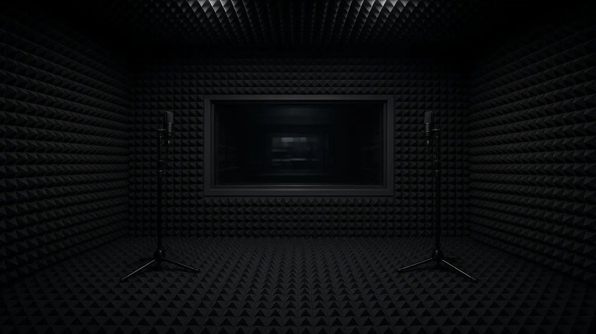
KNOWLEDGE
The physics
behind the quiet.
วิทยาศาสตร์อาคาร — เสียง ความร้อน และวิธีติดตั้งที่ทำให้หน้าต่างทำงานได้จริง
ORIENTATION
Standards exist
so a window can be compared.
A glazed opening is a hole in the thermal and acoustic envelope that we then try to close with engineering. The public standards below are how laboratories, manufacturers, and specifiers talk about that work. STELLA uses them as a shared language with architects — not as a claim that we operate an accredited test laboratory.
มาตรฐานสาธารณะเป็นภาษาที่ใช้คุยกับสถาปนิก ไม่ใช่ใบรับรองห้องแล็บของแบรนด์
01 · ACOUSTICS
Airborne sound, Rw, and STC.
Street noise, BTS, and construction are airborne sound. In the laboratory, a specimen is mounted between a source room and a receiving room. Sound pressure levels are compared across frequency bands. ISO 10140 describes that laboratory method for building elements. ISO 717-1 then compresses the spectrum into a single rating: Rw, the weighted sound reduction index, sometimes with spectrum adaptation terms C and Ctr for living-room or traffic-like noise.
North American practice uses ASTM E90 for the laboratory measurement and ASTM E413 for STC (Sound Transmission Class). Rw and STC are cousins, not twins: they use different reference curves, so a one-decibel swap between them is not a conversion. On STELLA tier cards we print an STC-style figure as a familiar industry shorthand, aligned with the “32 dB+” language on the homepage. Treat both as design-target conversation, not as a certified test report for a named opening.
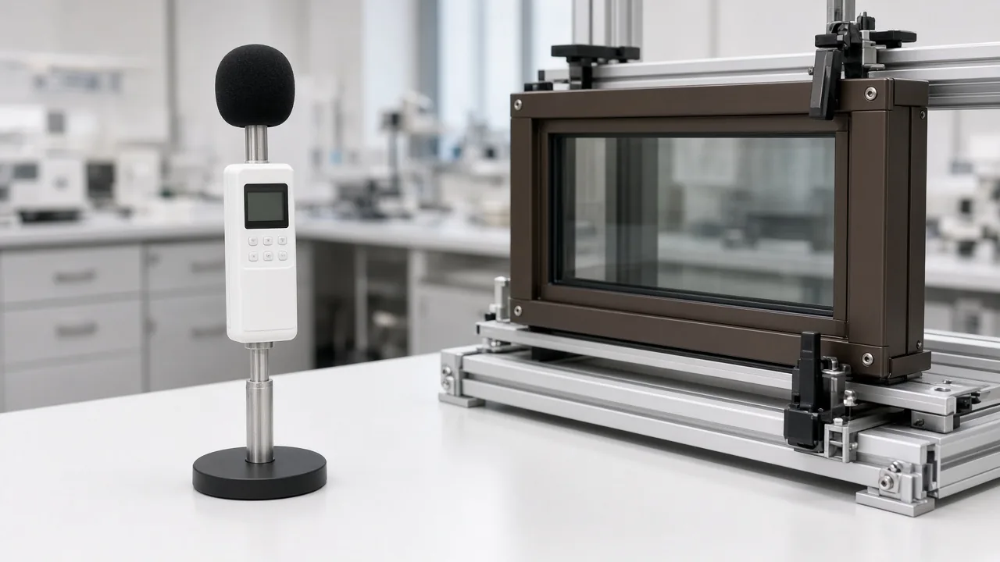
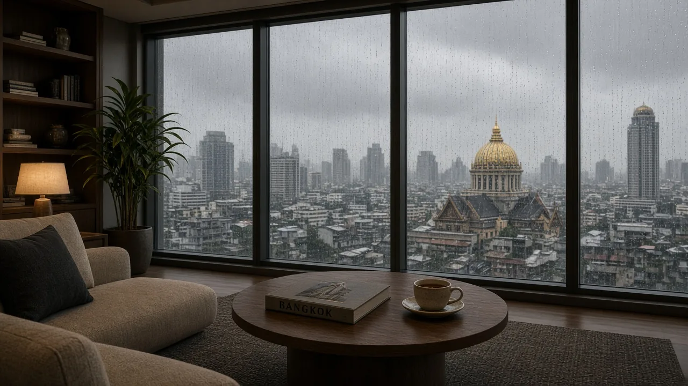
A published Rw or STC is for a tested assembly of a given size, glass build-up, and frame. A larger sash, a different gasket, or a leaky install will not repeat the laboratory number. Field measurement uses other methods (ISO 16283 in buildings) and typically reads lower than the lab.
02 · THERMAL & SOLAR
Uw, Ug, SHGC, and Bangkok heat.
U-value is thermal transmittance: watts per square metre per kelvin. Lower is better insulation. EN 673 is the calculation method for the centre-of-glass U-value (Ug). ISO 10077 is the calculation method for the whole window (Uw), which includes the frame, the edge of glass, and the spacer. A handsome Ug on a glass data sheet is not the same as the Uw of the installed unit — the frame and the warm-edge spacer do a large share of the work.
SHGC (solar heat gain coefficient) and the European g-value describe how much solar radiation becomes heat indoors. In a heating climate, some gain is useful. In Bangkok, solar control is usually the point: a lower SHGC on west and east facades reduces cooling load. Low-emissivity (low-E) coatings reflect long-wave infrared; the coating position in the IGU stack is a design choice, not a slogan. The system page’s ~1.4 W/m²K figure is the Signature whole-window design target already stated on this site, set against a typical single-glazed Thai opening around 5.8 W/m²K.
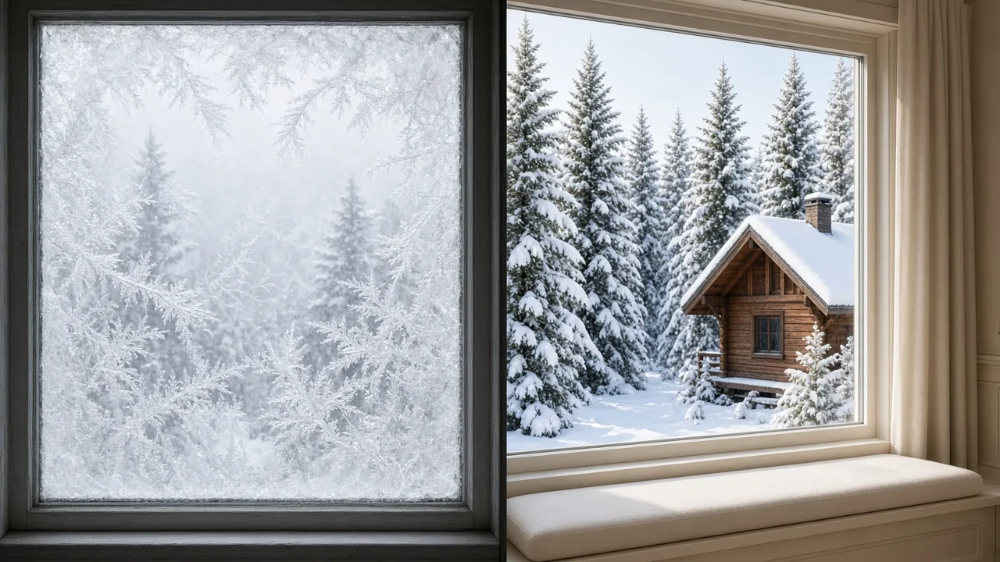
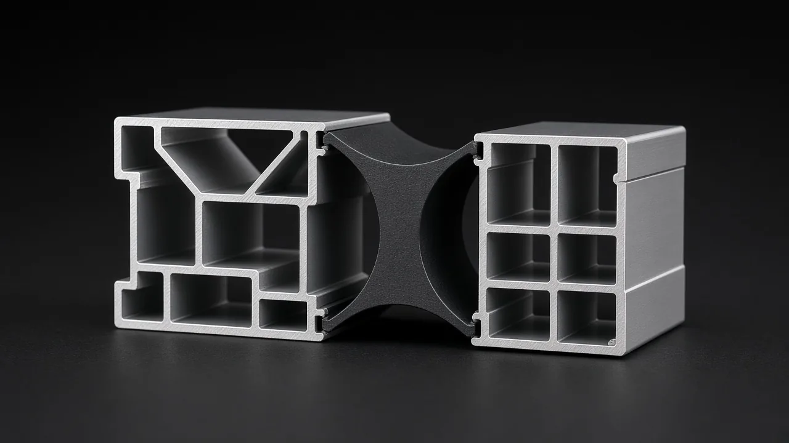
DESIGN TARGETS
Typical ranges for STELLA tiers.
These figures repeat the Essential / Signature / Reserve cards on the Tiers page. They are typical design targets for those build-ups and a ten-year local warranty mention already used on this site — not results from an accredited STELLA laboratory campaign.
| Tier | Glass build-up | Uw (typical target) | Acoustic (STC-style) | SHGC (typical) | Warranty |
|---|---|---|---|---|---|
| Essential | 6 / 12 / 6 mm, single low-E | 1.8 W/m²K | 32 dB | 0.40 | 10 years |
| Signature | 6 / 12 Ar / 6 mm, double low-E | 1.4 W/m²K | 36 dB | 0.28 | 10 years |
| Reserve | 6 / 12 Ar / 6 / 12 Ar / 6 mm | 0.9 W/m²K | 42 dB | 0.22 | 10 years |
03 · GLAZING UNIT ANATOMY
The IGU is a small climate.
An insulating glass unit is two or more panes, a spacer, desiccant, a primary butyl seal, and a secondary seal. Argon (or krypton) in the cavity slows conduction and convection versus air. A warm-edge spacer — stainless, hybrid, or polymer rather than a plain aluminium box — reduces the thermal bridge at the perimeter, which is where condensation likes to start. Optical inspection of the edge and the coating is ordinary factory discipline, not theatre.
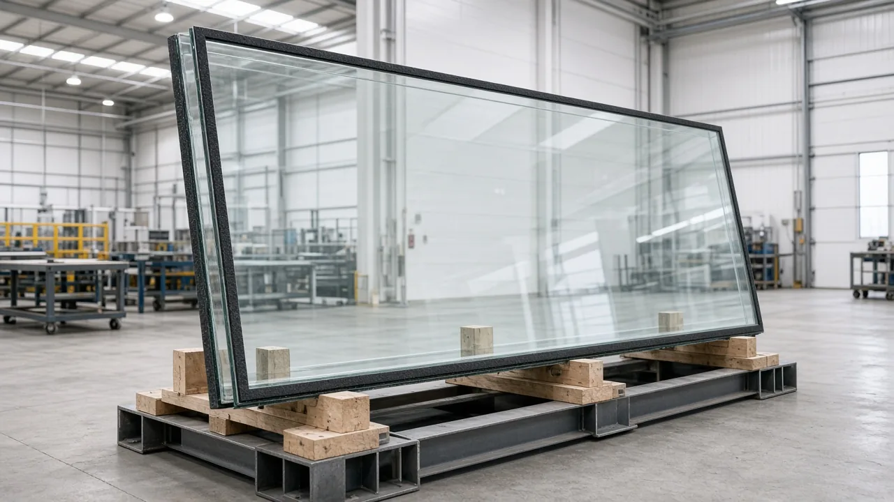
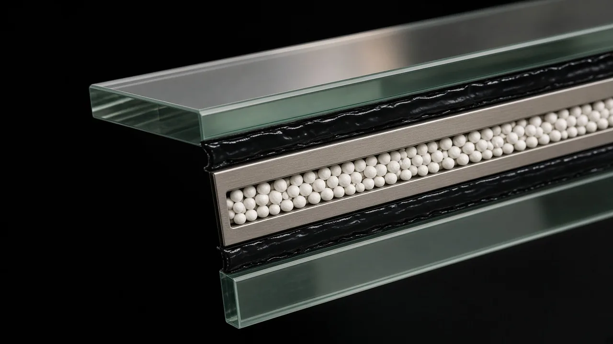
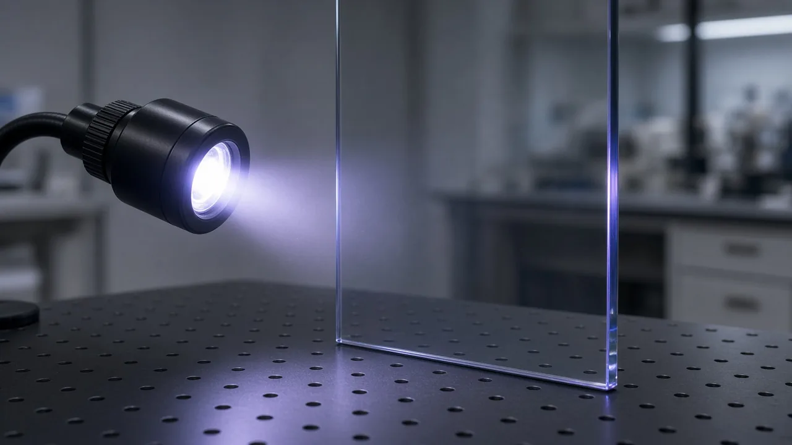
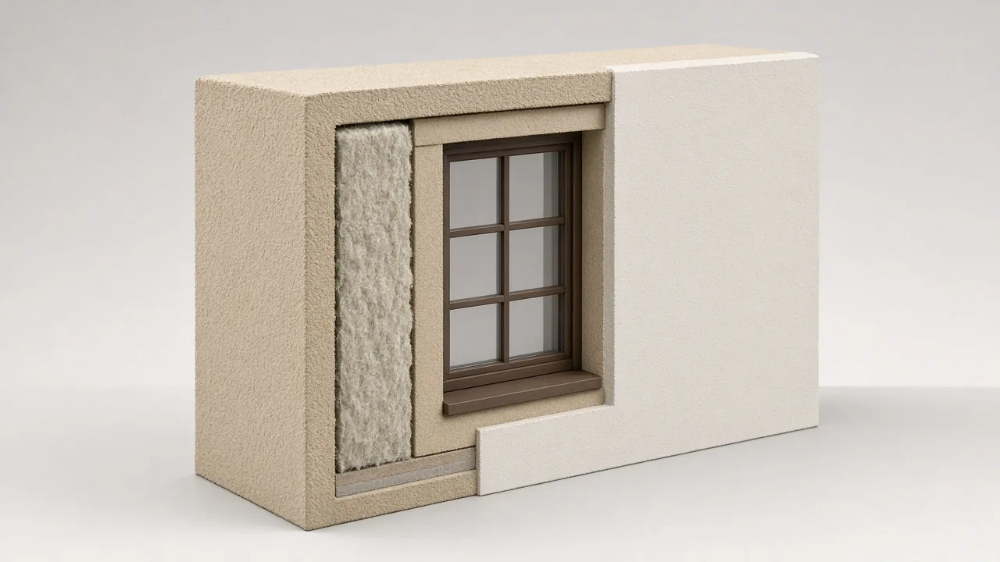
04 · WEATHER & STRUCTURAL TESTING
Wind, water, and the product standard.
EN 14351-1 is the European product standard for windows and external pedestrian doorsets. It does not invent physics; it names the characteristics a specifier may ask for — air permeability, watertightness, resistance to wind load, acoustic and thermal performance among them — and points to the test or calculation methods behind each. Water spray and wind-load jigs are how those weather classes are demonstrated in a laboratory. Structural silicone at a glass-to-frame joint is a different family of work (facade / SSG), shown here as industry context for how glass is held, not as a STELLA curtain-wall certificate.
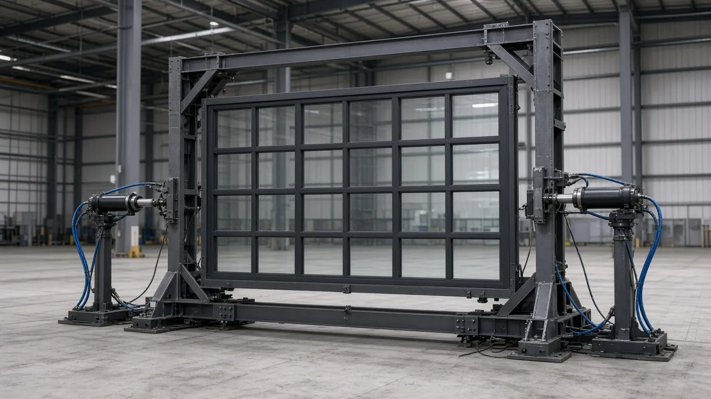
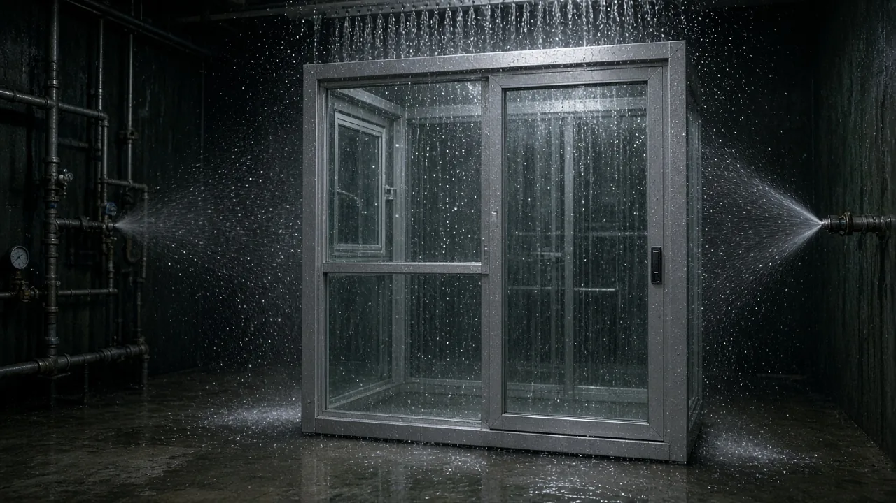
05 · INSTALLATION SCIENCE
The number dies in the rough opening.
A laboratory Rw is measured with the specimen sealed into a test aperture. On site, the joint between frame and wall is a third envelope: air, water, and vapour have to be managed. Expanding foam alone is not a vapour-control strategy. Common European practice (often discussed as RAL-quality installation) keeps the inner plane tighter than the outer, so moisture that enters the joint can dry to the outside. Tape, membranes, and a correctly tooled seal sit with the foam — they are not optional cosmetics.
Three gasket planes on the sash (drainage, intermediate, and inner airtight) only work if the hardware pulls the sash evenly. Multi-point locks exist to compress those gaskets, not merely to look like security theatre. Cycle testing of hardware is how manufacturers talk about duty (tens of thousands of operations); STELLA’s published language of hardware rated toward fifty thousand cycles belongs in that industry conversation, not as a framed certificate on this page.

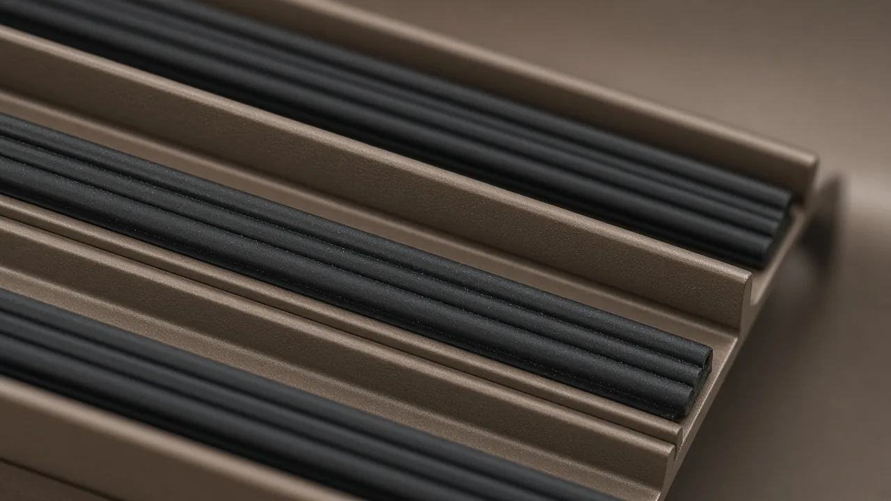

06 · SPECIFYING WITH ARCHITECTS
Write the assembly, not a brand line.
A useful glazing schedule names opening marks, sizes, operation, glass build-up, target Uw, target SHGC or g-value, acoustic intent (Rw or STC, and which spectrum), hardware duty, and who is responsible for the perimeter seal. EN 14351-1 is a checklist of performance characteristics; ISO 10077 and EN 673 are how thermal numbers are calculated; ISO 10140 / ISO 717-1 (or ASTM E90 / E413) are how airborne sound is tested and rated. Ask for the specimen description that sits behind any quoted decibel.
Tropical specifying differs from a German heating-season default: solar control and condensation at the inner pane in air-conditioned rooms matter as much as winter U-value. We would rather walk a facade with you at the Thonglor chamber than hide behind a PDF.
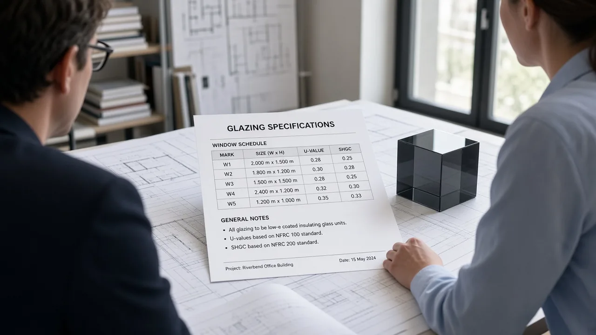
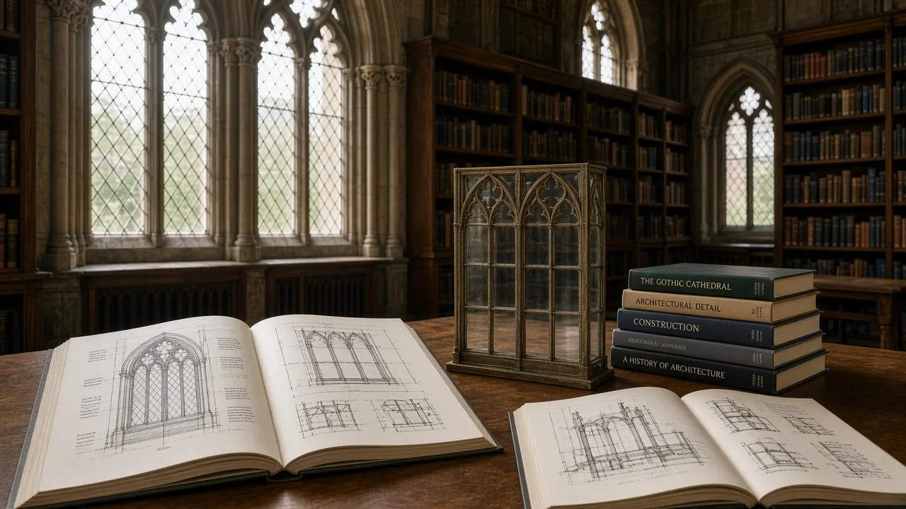
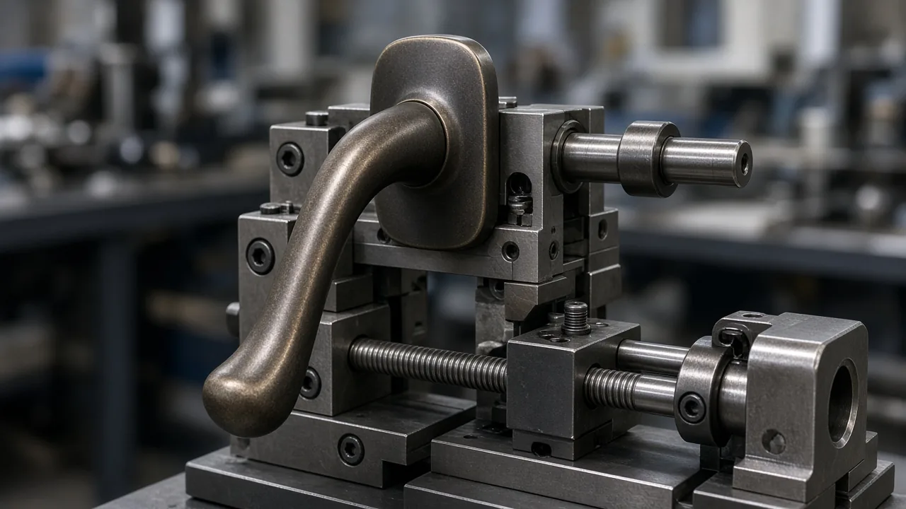
07 · REFERENCES / FURTHER READING
Public standards, cited carefully.
The documents below are published by ISO, CEN, and ASTM. They are sold by those bodies; we list them so a specifier can look them up. Links go to the organisations, not to pirated copies. Editions change — always check the current official text.
-
ISO 10140 (series). Acoustics — Laboratory measurement of sound insulation of building elements. Part 2 covers airborne sound insulation of building elements. Geneva: International Organization for Standardization.
iso.org catalogue — ISO 10140-2 -
ISO 717-1. Acoustics — Rating of sound insulation in buildings and of building elements — Part 1: Airborne sound insulation. Defines Rw and the spectrum adaptation terms C and Ctr. Geneva: ISO.
iso.org catalogue — ISO 717-1 -
EN 14351-1. Windows and doors — Product standard, performance characteristics — Part 1: Windows and external pedestrian doorsets. European Committee for Standardization (CEN). The product standard that gathers acoustic, thermal, air, water, and wind characteristics for CE marking of those products.
standards.cencenelec.eu -
ISO 10077-1 / ISO 10077-2. Thermal performance of windows, doors and shutters — Calculation of thermal transmittance. Part 1 general; Part 2 numerical method for frames. Used to arrive at Uw, distinct from centre-of-glass Ug.
iso.org catalogue — ISO 10077-1 -
EN 673. Glass in building — Determination of thermal transmittance (U value) — Calculation method. CEN. The usual route to Ug for glazing.
CEN / CENELEC standards portal -
ASTM E90. Standard Test Method for Laboratory Measurement of Airborne Sound Transmission Loss of Building Partitions and Elements. West Conshohocken, PA: ASTM International. Industry context in markets that specify STC rather than Rw.
astm.org — E90 -
ASTM E413. Classification for Rating Sound Insulation. The classification that yields STC from a transmission-loss curve.
astm.org — E413
If a brochure shows an ISO logo and a company name, ask whether it is a certified management system, a product test of a defined specimen, or decoration. This page is the first of those conversations, not a substitute for a test report on your opening.
CONTINUE
Hear it, then specify it.
The Thonglor chamber is for ears. The system page is for layers. The tiers page is for the three design targets above.